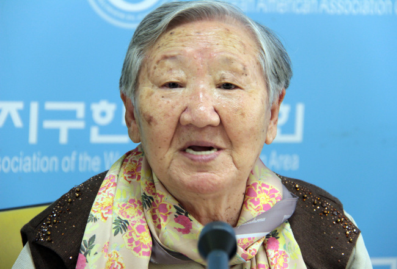

This page is dedicated to Gil Won-ok, who has dedicated her life to demanding redress and official apology from Japan for the military sexual violence that affected over 200,000 women during World War II.
Gil Won-ok was born in 1928 in Pyongyang, Heian'nan-dõ, Korea, Empire of Japan. Is an activist and a former Korean comfort woman.
Gil Won-ok was taken to Harbin, Manchuria, and brought to a comfort station in the winter of 1940, where, from thirteen to eighteen years old, she was repeatedly sexually assaulted by Japanese soldiers. During the years Gil Won-ok spent as a victim of military sexual slavery, she contracted syphilis, which formed tumors in her body, leading to four surgeries. Due to complications, doctors gave Gil Won-ok a hysterectomy, which left her sterile. After the war, Gil Won-ok tried to go back home to North Korea, but when she got to the border, it was closed. Gil Won-ok is still unable to return to her home.